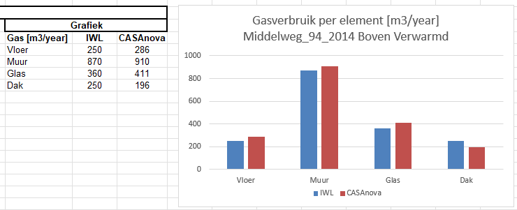
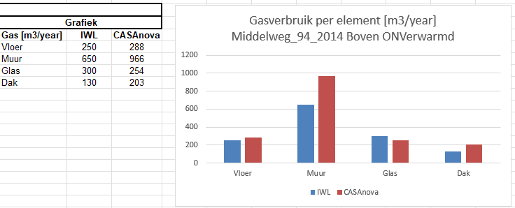
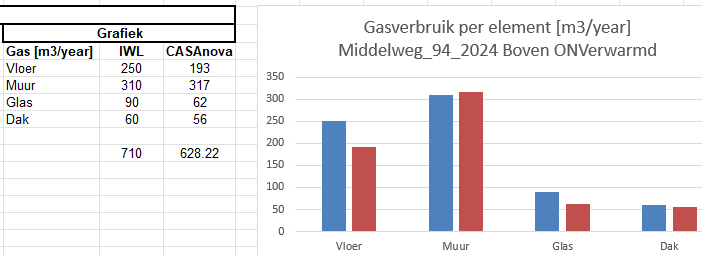

IWL-CASAnova
zaterdag 12 oktober 2024
16:56
Ik heb de volgende 3 woningsituaties vergeleken:
1. Mijn woning in 2014, met Verwarmde Bovenverdieping
2. Mijn woning in 2014, met Onverwarmde Bovenverdieping
3. Mijn woning in 2024, met verbeterde isolatie en Onverwarmde Bovenverdieping
Dit levert met beide programma's een nagenoeg identiek resultaat

Er zit een substantieel verschil tussen het warmteverlies door de muren.
Vermoedelijk wordt dit veroorzaakt doordat ik in het CASAnova model niet het oppervlakte voor interne warmtelast heb gehalveerd, moet ik nog een keer nakijken.

Hier is een goede overeenkomst.
Wel berekent CASAnova het lek door de vloer te laag. Immers in alle situaties, zou het lek door de vloer identiek moeten zijn, immers we houden de temperatuur op de begane grond constant en de isolatie is in alle 3 de situaties gelijk.

Inzicht WarmteLek Woningen.